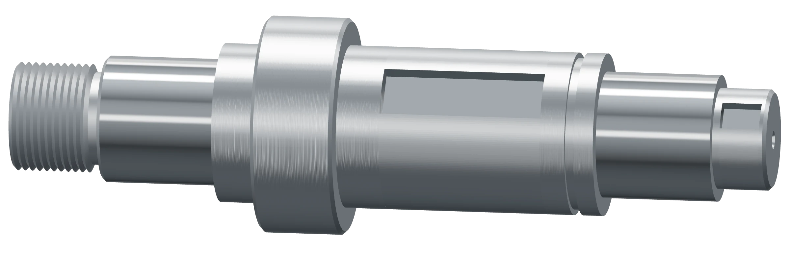

Díly podle vašeho výkresu, změřené na setiny milimetru
Soustružení, frézování, broušení a svařování v jedné hale u D1 v Rousínově. Kusy, prototypy i série do 5 000 kusů.
Volná kapacita na soustruzích od 3. listopadu

- Závit M30 × 2 6g, závitový kalibr dobrý
- Ložiskový čep Ø 35 k6 +0,018 / +0,002 35,011
- Nákružek Ø 60 ±0,3 59,94
- Sedlo kola, pero 14 P9 Ø 45 g6 −0,009 / −0,025 44,986
- Ložiskový čep Ø 35 k6 +0,018 / +0,002 35,008
- Konec pro spojku Ø 28 h6 0 / −0,013 27,995
Co u nás vyrobíte
Pošlete výkres nebo 3D model a technolog navrhne postup. Když na výkresu najde toleranci, která díl zbytečně prodraží, řekne vám to ještě před naceněním.
-
Soustružení
Hřídele, příruby, čepy a pouzdra. Malé díly z tyče jedou s podavačem i přes noc.
- Rozsah
- Ø 3–320 × 600 mm
- Přesnost
- IT6, Ra 0,8
-
Frézování
Skříně, desky, konzole a přípravky na tříosých i pětiosých centrech.
- Rozsah
- 1 020 × 560 × 510 mm
- Přesnost
- poloha děr ±0,01 mm
-
Broušení na kulato
Ložiskové čepy, vodicí plochy a pouzdra, vnější i vnitřní průměry, i po kalení.
- Rozsah
- Ø 200 × 650 mm
- Přesnost
- IT5, házení 0,005 mm
-
Svařování a obrábění
Rámy a konzole svaříme, vyžíháme a funkční plochy obrobíme na jedno upnutí.
- Rozsah
- svařence do 1 000 mm
- Přesnost
- rovinnost lišt 0,05 mm

Přípravky pro svařovacího robota za tři týdny
Integrátor robotických pracovišť, Brno
Od 3D modelu po smontovaný přípravek. Upínací body jsme frézovali na pětiosém centru a každý změřili na 3D měřicím stroji. Robot po instalaci nemusel nic dorovnávat.
- Poloha upínacích bodů
- ±0,02 mmnejvětší odchylka 0,011 mm
- Materiál
- EN AW-7075, C45
- Od modelu po montáž
- 3 týdny
Rodinná firma z Rousínova
Josef Setina začal v roce 1996 se soustruhem v garáži. Dnes má firma 34 lidí, dvanáct CNC strojů a vlastní halu u dálnice D1. Od roku 2024 ji vede jeho syn Petr.
Zakázku vám nacení technolog, který ji potom připraví do výroby. Když se něco změní, voláte pořád stejnému člověku.
- Lenka Hájková
- obchod a nacenění, 517 000 100
- Petr Setina
- jednatel a nábor, 517 000 101
Historie, lidé a cesta k nám Hledáme frézaře, seřizovače a svářeče

Pošlete výkres a do 48 hodin máte cenu
Cenu za kus, termín a místa, kde se dá díl zlevnit. Výkresy vidí jen obchod a technolog, smlouvu o mlčenlivosti podepíšeme ještě před naceněním.
Lenka Hájkováobchod+420 517 000 100obchod@setina-obrabeni.cz